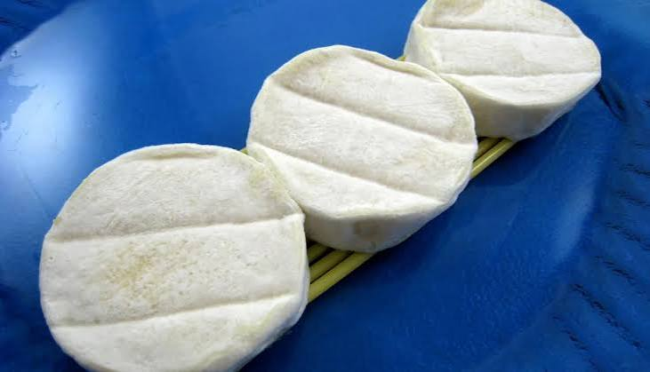

Fabrication
du Cabécou
de Rocamadour


⟹ Savoir-Faire Fromager ⟸
Le mot « cabécou » vient de l'occitan cabra, la chèvre : il désigne depuis des siècles ces petits palets de fromage fermier que les familles paysannes du Quercy fabriquaient pour leur propre consommation, avec le lait des quelques chèvres élevées sur l'exploitation.

Longtemps produit à l'échelle domestique, le Cabécou s'est peu à peu diffusé sur les marchés locaux, notamment celui de Rocamadour, dont le nom a fini par désigner l'ensemble de la production, bien au-delà du seul village.
La reconnaissance en Appellation d'Origine Contrôlée, obtenue en 1996 puis confirmée en AOP au niveau européen, a permis de codifier et de protéger ce savoir-faire, tout en délimitant précisément une zone de production à cheval sur cinq départements du Massif central et du Quercy.
Aujourd'hui, le Cabécou de Rocamadour reste fabriqué selon des méthodes largement artisanales, où la main du fromager — le moulage à la louche notamment — continue de jouer un rôle essentiel dans la qualité du fromage.
L'appellation Rocamadour s'étend sur les causses du Quercy et leurs abords, un territoire de plateaux calcaires où le thym, la lavande sauvage et les herbes rases composent l'alimentation naturelle des troupeaux caprins.
Cette végétation typique des causses imprime sa marque sur le lait, puis sur le fromage, dont les arômes évoluent avec les saisons : plus frais et lactés au printemps, plus prononcés à mesure que l'année avance.
La zone de production, définie par le cahier des charges de l'AOP, couvre des communes du Lot, de la Dordogne, de l'Aveyron, du Tarn-et-Garonne et de la Corrèze, dessinant un territoire cohérent autour du causse de Gramat.
Température de service : sortir le Cabécou du réfrigérateur une vingtaine de minutes avant dégustation pour révéler pleinement ses arômes.
Degrés d'affinage : plus frais, il est doux et crémeux ; plus affiné, il devient plus ferme et corsé, avec des notes plus marquées.
Conservation : à conserver au réfrigérateur, idéalement enveloppé dans un papier perméable plutôt que sous film plastique.
Utilisation : se déguste nature, tiède sur toast, ou en salade, selon les usages traditionnels du Quercy.
Le marché de Rocamadour, comme ceux de Gramat, Souillac ou Cahors, permet de trouver le Cabécou directement auprès de producteurs fermiers, dans le respect de la saisonnalité de la production caprine.
De nombreuses fermes de la zone d'appellation ouvrent leurs portes à la visite et à la vente directe, offrant l'occasion d'observer le moulage à la louche et d'échanger avec les producteurs.
Fromageries et épiceries fines du Lot proposent également le Cabécou à différents stades d'affinage, permettant de comparer les versions fraîches, mi-affinées ou plus sèches.